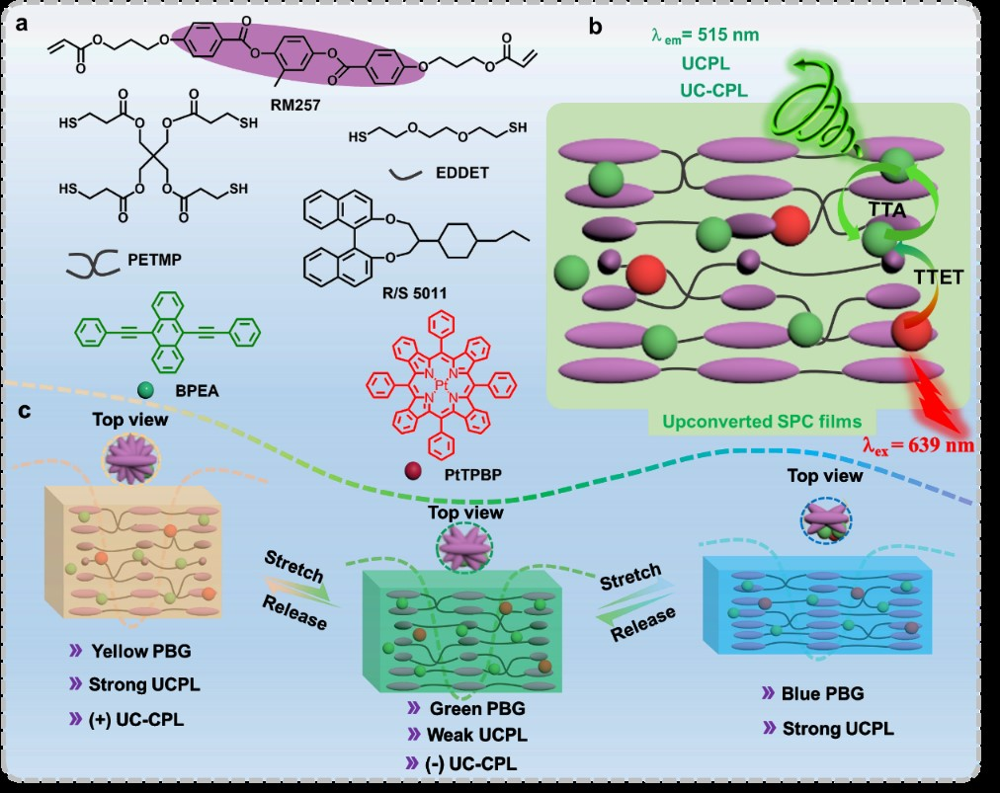
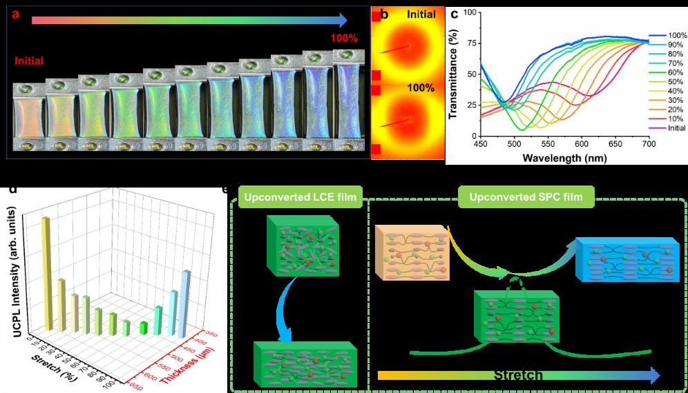
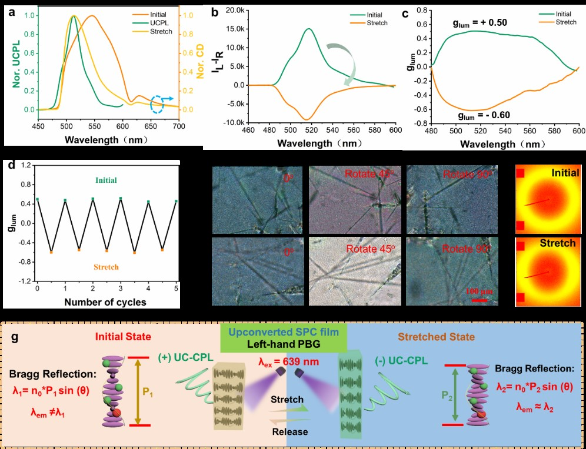
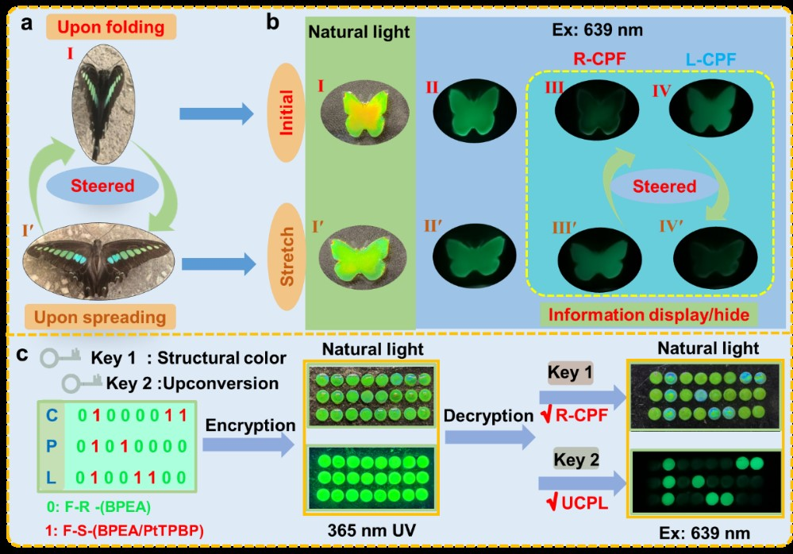

基于三重体-三重体湮灭的光子上转换(TTA-UC)能够将低能量光子(长波长光)转化为高能量光子(短波长光)。与稀土掺杂的上转换材料相比，TTA-UC具有更低的激发功率密度运行优势以及更简单的材料制备过程。这些特性使得TTAA-UC在多种应用中极具前景，包括光学和生物成像、光伏器件、防伪技术和信息加密。将固体载体纳入其中是一种实现TTA-UC设备制造的有效策略，因为这具有封装和可加工性方面的优势。然而，在实际应用中，材料变形往往是不可避免的，而实现对上转换性能的外部调节仍然是一个重大挑战。
为了探究形变对UCPL性能的影响，我们将一种TTA-UC系统(其中铂(II)四苯基四苯并卟啉(PtTPBP)作为敏化剂，9，10-双(苯乙烯基)蒽(BPEA)作为受体)整合到可拉伸的液晶弹性体(LCE)薄膜中。然而，在纵向拉伸LCE薄膜的过程中，TTA-UC强度出现了逐渐下降的现象。为解决这一难题，基于螺旋型液晶弹性体的可拉伸光子晶体(SPC)薄膜被确定为有前景的载体材料(图一)。SPC薄膜代表了一种新兴的智能材料类别，它将螺旋超结构的独特手性光学特性与弹性体固有的柔韧性和稳定性相结合。需要注意的是，螺旋超结构会产生光子带隙(PBG)，这种结构能够在带隙边缘增强发光现象。同时，这些弹性体的延展性使得PBG的带边能够进行调整，以与TTA-UC的发射波段相匹配。这种匹配有望抵消由于变形导致的发射强度下降。此外，SPCs的螺旋排列结构有助于产生圆偏振发光(CPL)，其特征是发射出强度不同的左旋和右旋圆偏振光。利用这些独特的特性，将SPCs作为手性模板与TTA-UC组分相结合，有望开发出同时具有可调TTA-UC和上转换圆偏振发光(UC-CPL)特性的材料。
 图1. 上转换SPC薄膜的组成及基本特性。本研究通过应力-应变测试与拉伸依赖的UCPL测试，系统分析了弹性体薄膜在拉伸下的机械与光学性能。研究发现，普通薄膜(F1-1)在拉伸过程中UCPL强度持续下降，不利于实际应用。为改善此问题，引入手性分子S-5011制备了具有螺旋超结构的SPC薄膜(F2-1、F3-1)，其PBG在拉伸中发生蓝移，颜色从红经绿变蓝，且过程可逆。结构分析表明，拉伸诱导多畴结构向单畴结构转变，并影响其圆偏振光响应。重点研究了F3-1薄膜的UCPL性能，发现其UCPL强度随拉伸先降后升：在70%应变处最低，之后因PBG边缘与UCPL发射波长(约515 nm)共振而增强。寿命和效率测试进一步证实，PBG边缘通过提高光子态密度增强了UCPL。相比之下，无PBG的F1-1薄膜UCPL持续减弱。该研究证明，利用PBG边缘增强效应可有效缓解拉伸导致的UCPL损失。(图二)
图2. 不同薄膜在动态拉伸下的基本特性。
进一步,探讨了机械拉伸对上转换SPC薄膜的UC-CPL性能的动态调控。由于手性光子晶体具有选择性反射圆偏振光的特性，通过圆二色谱证实拉伸可使PBG从545nm蓝移至514nm，从而改变其与UCPL发光峰的重叠程度。测量结果显示，拉伸能使UC-CPL信号从左旋反转为右旋，不对称因子glum从+0.50转变为-0.60。经过5次拉伸-释放循环后glum值保持稳定，表明材料具有良好的疲劳抗性。结构分析表明30%应变下液晶纹理未发生显著变化，证明UC-CPL反转主要源于PBG的位移机制：当PBG与发光峰重合时，体系选择性反射左旋光而透射右旋光，从而输出右旋发光。该研究实现了通过机械力对圆偏振发光的动态调控。(图三)
最后基于上转换SPC薄膜的机械可调结构颜色和UC-CPL特性，开发了其在动态信息加密与解密中的应用。受蝴蝶翅膀折叠隐藏、展开显色的启发，制备了蝴蝶形状的上转换SPC薄膜作为信息编码介质。在自然光下，该薄膜呈黄色结构色；在639 nm光激发下，发出绿色UC-CPL，且透过左右旋圆偏振片(R-CPF/L-CPF)呈现显著明暗差异，证实了左旋发光特性。经机械拉伸处理后，薄膜结构色由黄变绿，UC-CPL强度减弱，且圆偏振发光行为发生反转，说明其光学性能可动态调控。进一步地，研究设计了基于结构色与UCPL的二进制信息加密方案：以不同薄膜分别代表“0”和“1”，构成编码矩阵。在自然光或365 nm紫外光下，信息均处于隐藏状态；而通过R-CPF观察结构色变化，或在639 nm激发下识别UCPL发光点，可分别解密出编码信息“CPL”。该策略利用手性光子晶体与上转换发光的独特光学行为，为智能加密材料提供了新思路。(图四)
转载文章请注明出处：国家纳米科学中心段鹏飞老师课题组 https://duanpengfei-chirality.com/